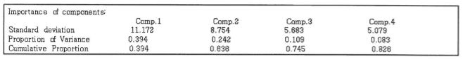

ADsP 문제 풀이 7일차
주성분 분석
7회 기출문제
1. 아래는 1988년 서울올림픽에서의 여자 육상 7종 경기의 기록 데이터를 사용한 주성분분석 결과이다. 다음의 설명 중 가장 부적절한 것은?
한 개의 주성분으로 자료를 축약할 때 전체 분산의 61.8%가 설명 가능하다.
두 개의 주성분으로 자료를 축약할 때 전체 분산의 12.8%가 설명 가능하다.
정보손실율 20% 이하로 변수 축약을 한다면 세 개의 주성분을 사용하는 것이 적당하다.
첫번째 주성분의 분산이 가장 크다.
13회 기출문제
2. 주성분 분석은 p개의 변수들을 중요한 m(p)개의 주성분으로 표현하여 전체 변동을 설명하는 방법이다. 다음 중 주성분 개수(m)를 선택하는 방법에 대한 설명으로 가장 부적절한 것은?
전체 변이 공헌도방법은 전체 변이의 70~90%가 되도록 주성분의 수를 결정한다.
평균 고유값방법은 고유값들의 평균을 구한 후 고유값이 평균값 이상이 되는 주성분을 제거하는 방법이다.
scree graph를 이용하는 방법은 고유값의 크기순으로 산점도를 그린 그래프에서 감소하는 추세가 원만해지는 지점에서 1을 뺀 개수를 주성분의 개수로 선택한다.
주성분은 주성분을 구성하는 변수들의 계수 구조를 파악하여 적절하게 해석되어야 하며, 명확하게 정의된 해석 방법이 있는 것이 아니다.
5회 기출문제
3. 아래는 89구역에서 54종의 식물에 대해 10년 넘게 측정한 평균건조무게 자료(변수 54개, 관측치 89개) 주성분분석을 실행한 결과의 일부분이다. 다음 설명 중 가장 부적절한 것은?

첫 번째 주성분은 한 변수의 변동량의 39.4%를 설명한다.
주성분분석은 상관관계가 있는 변수들을 결합한 것이다.
54개의 변수를 4개의 주성분변수로 축약했을 때의 정보의 손실은 약 17.4%이다.
첫 세개의 주성분은 약 10.9%의 원 변수의 변동량을 설명할 수 있다.
11회 기출문제
4. 다음은 4개의 변수를 가진 데이터프레임 USArrests에 주성분분석을 적용해서 얻은 결과이다. 변수들의 전체 변동의 80% 이상을 설명하기 위해 필요한 최소 주성분은 몇 개인가?
1개
2개
3개
4개
제출하기